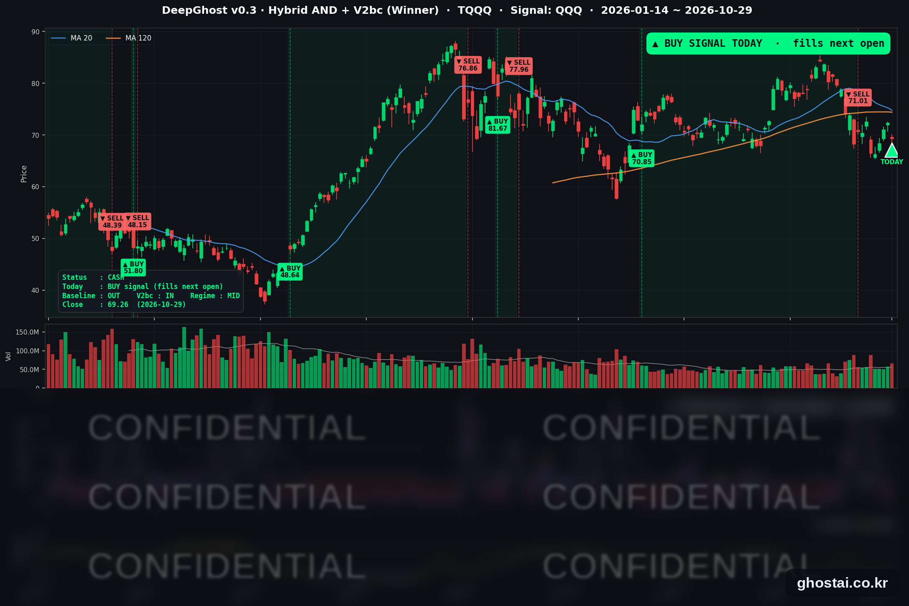

S&P 종목 81% 상승, 나스닥 하락, TQQQ 매수 신호 발생
· Ghost.AI 데일리 리포트
👻 매일 시그널과 히스토리를 홈페이지에서 한눈에 → www.ghostai.co.kr
회원 페이지 안내 — 회원 가입하시면 커버리지 전 종목의 원본 시그널과 분석 레포트를 매일 확인하실 수 있습니다. 회원 페이지는 블로그·유튜브보다 먼저 업데이트됩니다. 지금 베타 회원을 받고 있으며, 이메일과 필명만으로 가입하실 수 있고 서비스 사용료는 받지 않습니다. 이메일 확인 후 바로 이용하실 수 있습니다.
한 줄 요약: S&P 500 구성종목 494개 중 402개가 올랐지만, 알파벳(-12.64%)을 비롯한 대형 기술주가 크게 내려 나스닥은 1.38%, TQQQ 는 4.28% 내렸습니다. 3분기 GDP 는 3.4% 늘고 물가 상승률은 낮아져 10년물 금리는 4.989% 로 다시 5% 아래에서 마감했습니다. 이런 날 전략은 TQQQ 매수 신호를 냈고, 다음 거래일(30일) 미국 장 시가에 매수합니다.
📊 오늘의 매매 신호
| 항목 | 내용 |
|---|---|
| 오늘의 신호 | 🟢 전략 매수 신호 발생 — 전략은 다음 거래일 미국 장 시가에 TQQQ 를 매수합니다 (한국시간 오후 10:30, 11~3월은 11:30) |
| 포지션 상태 | 매수 신호 발생 (체결 전) |
| 신호 발생일 | 2026-10-29 |
| 직전 현금 보유 기간 | 2026-10-19 ~ 2026-10-29 (9거래일) |
TQQQ 시그널 — OUT OF POSITION → 매수 신호 발생
현재 상태: 매수 신호 발생 | 10월 30일(금) 미국 장 시가 체결 예정

전략은 10월 19일(월) 미국 장 시가 71.01달러에 TQQQ 를 매도한 뒤 9거래일 동안 현금을 보유했고, 오늘 매수 신호를 냈습니다. 매수는 다음 거래일인 10월 30일(금) 미국 장 시가에 이뤄지며, 진입가는 그 시가로 정해집니다. 직전 거래(8월 6일 70.85달러 매수 → 10월 19일 71.01달러 매도)의 전략 수익률은 +0.23% 였습니다.
| 날짜 | TQQQ 종가 | 매도가(71.01달러) 대비 |
|---|---|---|
| 10/19(월) | $70.64 | -0.52% |
| 10/20(화) | $70.41 | -0.84% |
| 10/21(수) | $72.61 | +2.25% |
| 10/22(목) | $66.42 | -6.46% |
| 10/23(금) | $66.29 | -6.65% |
| 10/26(월) | $68.43 | -3.63% |
| 10/27(화) | $71.04 | +0.04% |
| 10/28(수) | $72.36 | +1.90% |
| 10/29(목) | $69.26 | -2.46% |
TQQQ 는 오늘 4.28% 내린 69.26달러로 마감해 지난 매도가보다 2.46% 낮고, 6월 2일 최고 종가(87.22달러)보다 20.59% 낮습니다. 30일 시가에는 29일 장 마감 후 실적을 발표한 아마존·인텔에 대한 주가 반응이 함께 반영됩니다.
오늘 미국 시장 — 시황 요약
지수 마감
| 지수 | 종가 | 등락률 |
|---|---|---|
| S&P 500 | 7,720.39 | -0.30% |
| 나스닥 종합 | 26,184.73 | -1.38% |
| 다우존스 | 52,342.56 | -0.25% |
| 러셀 2000 (IWM) | 284.01 | +0.97% |
| QQQ (나스닥100) | 715.34 | -1.42% |
| TQQQ | 69.26 | -4.28% |
| 반도체 ETF (SOXX) | 513.86 | -1.55% |
S&P 500 구성종목 494개 중 402개(81%)가 올랐고 등락률 중간값은 +1.48% 였지만, 지수는 내렸습니다. 시가총액이 큰 기술주가 크게 내려 지수에 미친 영향이 컸기 때문입니다. 업종별로는 정보기술만 중간값이 마이너스(-0.27%)였고, 경기소비재(+2.75%)·부동산(+2.18%)·금융(+1.72%)이 강했습니다. 소형주 ETF IWM 은 0.97% 올라 9월 22일 이후 가장 높은 종가를 기록했고, QQQ 보다 2.38%p 높았습니다. 사상 최고 종가를 낸 지수는 없으며, S&P 500 은 10월 6일 최고 종가보다 1.26%, 나스닥은 5.13% 낮습니다.
국채 금리 동향
| 만기 | 10/28 종가 | 10/29 종가 | 전일 대비 |
|---|---|---|---|
| 3개월 | 3.995% | 3.998% | +0.3bp |
| 5년 | 4.871% | 4.801% | -7.0bp |
| 10년 | 5.045% | 4.989% | -5.6bp |
| 30년 | 5.361% | 5.329% | -3.2bp |
3분기 성장률은 높았지만 분기 물가 상승률이 크게 낮아지면서 5년물 중심으로 금리가 내렸습니다. 10년물은 하루 만에 다시 5% 아래로 내려와 전날 FOMC 뒤 오른 폭을 대부분 되돌렸습니다. 10년물과 3개월물의 차이는 105.0bp 에서 99.1bp 로 좁혀졌고, 역전은 없습니다. 미 재무부 기준 2년물은 4.61% 로 6bp 내렸습니다. 금리가 내리자 부동산·유틸리티가 전날 업종 하위권에서 상위권으로 올라왔습니다.
연준 발언 & 금리 패스
- 발언: 29일은 FOMC 회의 다음 날로 연준 위원 발언 금지 기간이었고, 공개 발언은 없었습니다.
- 전날 결정: 기준금리 3.75~4.00% 동결, 표결 10 대 2(위원 2명이 0.25%p 인상 주장).
- 지표: 3분기 PCE 물가는 연율 2.1%, 근원 PCE 는 2.5% 로 2분기(5.0%·3.3%)보다 크게 낮아졌습니다. 다만 9월 한 달 PCE 물가는 전년 대비 3.6% 로 여전히 높습니다.
- 다음 일정: 다음 회의는 12월 8~9일이며, 그 전에 10월 고용(11/6)·10월 CPI(11/10)가 나옵니다. 다음 연준 이사 공개 발언은 11월 6일 보먼 부의장입니다.
- 유럽: 유럽중앙은행은 예금금리를 2.50% 로 동결했습니다.
오늘의 핵심 이슈
- 종목 81%가 올랐지만 대형 기술주가 지수를 끌어내렸습니다. 알파벳은 3분기 검색 매출 증가율이 12% 로 낮아지고 분기 잉여현금흐름이 -91억 달러로 적자를 낸 뒤 12.64% 내렸습니다. 2004년 상장 이후 하루 하락률로는 가장 큽니다. 소프트웨어주도 크게 내려 서비스나우는 26.95%, 포티넷은 20.09% 내렸습니다.
- 3분기 GDP 3.4% 증가, 물가 상승률은 둔화. 실질 GDP 는 연율 3.4% 늘어 2분기(2.2%)보다 높았고, 분기 PCE 물가 상승률은 2.1% 로 낮아졌습니다. 이 영향으로 10년물 금리가 다시 5% 아래로 내려왔습니다.
- 장 마감 후 아마존·인텔 실적. 아마존의 3분기 매출은 2,019억 달러(+12%), AWS 매출은 460억 달러(+39%)였습니다. 인텔의 3분기 매출은 165억 달러(+21%)였고 데이터센터·AI 부문은 78% 늘었지만, 4분기 매출 전망(150억~160억 달러)은 3분기보다 낮습니다.
변동성 & 투자심리
VIX 는 16.91 에서 17.20 으로 1.71% 올랐습니다. 10월 23일(19.45) 이후 사흘 연속 내리다 소폭 오른 것으로, 나스닥 하락 폭에 비하면 변동성 지표의 움직임은 크지 않았습니다. 대부분의 종목이 오르고 금리도 내렸지만 나스닥·QQQ·TQQQ 는 대형 기술주 실적 반응으로 크게 내려, 시장 심리는 중립으로 봅니다.
매크로 & 원자재
| 품목 | 종가 | 등락률 |
|---|---|---|
| 원유 ETF (USO) | $168.19 | +0.97% |
| 금 ETF (GLD) | $368.57 | -1.32% |
- 유가: USO 는 장중 1.93% 까지 내렸다가 반등해 0.97% 올랐습니다. 10월 23일 올해 최고 종가(169.53달러)보다 0.79% 낮습니다.
- 금: GLD 는 사흘 연속 오른 뒤 1.32% 내렸습니다.
주요 종목 동향
| 종목 | 종가 | 등락률 | 비고 |
|---|---|---|---|
| META | 624.52 | +1.96% | 5거래일 연속 하락 뒤 반등 |
| AAPL | 348.91 | +1.48% | 11/2 장 마감 후 실적(매체 보도 기준) |
| QCOM | 185.41 | +1.33% | 낮게 출발한 뒤 장중 반등 |
| NFLX | 62.05 | +0.10% | |
| MSFT | 530.14 | -0.16% | 실적 다음 날, 높게 출발했다가 상승분 반납 |
| TSLA | 403.30 | -0.23% | |
| NVDA | 213.66 | -0.80% | |
| AVGO | 345.00 | -1.94% | 사흘 연속 상승 뒤 하락 |
| INTC | 92.07 | -3.62% | 장 마감 후 3분기 실적(매출 +21%) |
| AMZN | 243.79 | -4.25% | 장 마감 후 3분기 실적(AWS +39%), 7/30 이후 최저 종가 |
| MU | 934.27 | -4.98% | |
| GOOGL | 283.82 | -12.64% | 실적 다음 날, 2004년 상장 이후 하루 최대 하락 |
커버리지 12종목 중 4종목만 올랐습니다. 구성종목 81%가 오른 날이었지만, 하락이 대형 기술주에 몰린 구도가 커버리지 종목에서도 그대로 나타났습니다.
다음 일정 (미 동부시간)
- 10/30(금) 08:30 3분기 고용비용지수(ECI) / 09:45 10월 시카고 PMI / 정규장에서 아마존·인텔 실적에 대한 첫 반응
- 11/2(월) 14:00 연준 대출 담당자 설문(SLOOS) / 장 마감 후 애플 실적(매체 보도 기준)
- 11/3(화) 미국 중간선거(증시 정상 개장) / 10:00 9월 구인·이직 보고서(JOLTS)
- 11/5(목) 08:30 3분기 생산성·단위노동비용
- 11/6(금) 08:30 10월 고용보고서 / 12:15 보먼 연준 부의장 대담
- 11/10(화) 08:30 10월 CPI
Ghost.AI — Quantitative AI Investment
Model: DeepGhost v0.3 | Transformer-Based Deep Learning
Coverage: 14 tickers | Updated every trading day after US market close
⚠️ 본 자료는 정보 제공 목적으로만 작성되었으며 투자 권유가 아닙니다. 모든 투자의 책임은 투자자 본인에게 있습니다. 과거 성과가 미래 수익을 보장하지 않습니다.
[유의사항]
- 본 서비스는 불특정 다수를 대상으로 발행되는 단방향 정보 제공 서비스이며, 투자자 개인의 재산 상황·투자 목적·위험 선호도를 반영한 개별 투자 조언이 아닙니다.
- 고스트에이아이 주식회사는 고객과 쌍방향 의사소통(개별 상담, 맞춤형 자문 등)을 제공하지 않습니다.
- 본 콘텐츠는 투자 권유 또는 매매 주문의 청약·청약의 권유에 해당하지 않으며, 최종 투자 판단 및 그에 따른 손익의 책임은 전적으로 투자자 본인에게 있습니다.
고스트에이아이 주식회사